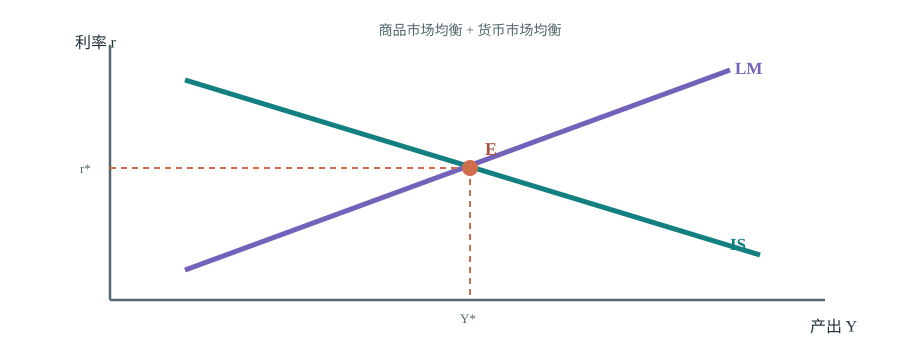

货币银行学 · 第 19 章
IS–LM 模型如何连接产出与利率？
从商品市场均衡和货币市场均衡出发，推导 IS 与 LM 曲线，分析财政和货币政策如何移动均衡，并用可计算的线性模型理解乘数、挤出效应和流动性陷阱。
一项财政支出增加，为什么可能推高总产出，也可能推高利率并挤出部分私人投资？一次货币宽松，又为什么可能降低利率并支持需求？IS–LM 模型用两条曲线把这两个问题放进同一个短期框架：IS 表示商品市场均衡，LM 表示货币市场均衡。
模型研究什么，又暂时忽略什么？
IS–LM 是一种短期宏观比较静态模型。它把价格水平暂时视为给定，研究在商品市场和货币市场同时均衡时，实际产出 Y 与利率 r 如何共同决定。模型常用于解释财政政策和货币政策的方向性影响，而不是完整描述现代经济的全部动态。
Hicks 在 1937 年的论文《Mr. Keynes and the “Classics”》中提出了后来被称为 IS–LM 的图形化解释框架。[1] 后续教材对模型做了多种简化和扩展。阅读时要记住：曲线形状来自行为方程和参数假设，不是自然界中真实存在的两条轨迹。

IS 曲线：商品市场怎样达到均衡？
在封闭经济的简化模型中，商品市场均衡要求产出等于计划总支出：
设消费函数为 C=C₀+c(Y−T)，投资函数为 I=I₀−b r，其中 0<c<1，b>0。C₀ 是自主消费，c 是边际消费倾向，T 是税收，I₀ 是自主投资，b 表示投资对利率的敏感度，G 是政府购买。代入均衡条件并整理：
在其他条件不变时，利率上升会提高融资成本并压低投资，均衡产出下降，所以 IS 曲线通常向右下方倾斜。政府购买增加或税收减少，会提高自主支出，使 IS 曲线向右移动。
LM 曲线：货币市场怎样达到均衡？
货币市场均衡要求实际货币供给等于实际货币需求：
为便于推导，设实际货币需求为 L(Y,r)=kY−h r，其中 k>0、h>0。收入上升会增加交易性货币需求；利率上升会提高持有货币的机会成本，降低货币需求。令实际货币供给 m=M/P，则：
当产出提高时，交易性货币需求增加；如果实际货币供给不变，利率需要上升以抑制其他货币需求，使市场重新均衡。因此 LM 曲线通常向右上方倾斜。实际货币供给增加，会使 LM 向右下方移动。
两条曲线相交：同时均衡
IS 曲线上的每一点都满足商品市场均衡，LM 曲线上的每一点都满足货币市场均衡。两条曲线交点 E 同时满足两组条件，给出模型中的短期均衡产出和利率。
考虑一个教学示例：C₀=20，c=0.8，T=20，I₀=30，b=10，G=25；实际货币供给 m=80，k=0.5，h=20。此时自主支出 A=C₀−cT+I₀+G=59。联立 IS 与 LM 得到 Y=220、r=1.5。示例把 r 以百分点计，参数 b 与 h 的单位相应匹配；产出和货币余额使用同一套教学单位。这些数字只是用于演示方程联立的假设参数，不是任何经济体的实际估计。
财政扩张使 IS 右移，通常提高产出和利率；利率上升又会抑制部分私人投资，这就是简单 IS–LM 框架中的挤出效应。货币扩张使 LM 右移，通常降低利率并提高产出。实际影响大小取决于消费倾向、投资利率敏感度、货币需求参数和政策反应。
财政政策、货币政策与曲线移动
| 冲击或政策 | 曲线变化 | 模型中的典型方向 | 需要注意 |
|---|---|---|---|
| 增加政府购买 G | IS 向右 | Y 上升，r 上升 | 私人投资可能被利率上升部分挤出 |
| 减税 T | IS 向右 | Y 上升，r 上升 | 取决于边际消费倾向和预期 |
| 增加实际货币供给 M/P | LM 向右 / 向下 | Y 上升，r 下降 | 利率传导和信贷需求可能受限 |
| 货币需求上升 | LM 向左 / 向上 | 给定 Y 时 r 上升 | 可能源于风险、支付需求或预防性持币 |
曲线移动不是曲线上移动：政府购买变化会改变 IS 的位置；沿着既定 IS 移动，则表示利率变化引起投资和产出的调整。读图时必须区分“曲线整体移动”与“沿曲线移动”。
模型边界：它不是现代宏观经济的完整地图
标准 IS–LM 通常假设短期价格水平给定、经济封闭、货币需求函数稳定，并把政策工具简化为货币数量或利率。现实经济存在开放经济资本流动、汇率、通胀预期、金融中介、资产负债表约束、财政债务动态和供给冲击。
不同货币政策操作框架也会改变 LM 的解释。如果央行以利率为操作目标并弹性供给准备金，模型中的货币供给可能不再适合被当作外生固定数量。2026 年一篇回顾性研究重新审视 IS–LM 的会计一致性与行为假设，提醒读者标准图形是教学模型，不能自动当成完整的 stock-flow consistent 模型。[2]
因此，IS–LM 最适合用来建立短期总需求的直觉、比较政策方向和讨论挤出效应。若要预测实际经济，需要使用更丰富的动态模型、数据和制度背景。
交互练习：计算 IS–LM 均衡
调整政府购买和实际货币供给
使用固定的教学参数：C₀=20、c=0.8、T=20、I₀=30、b=10、k=0.5、h=20。改变 G 或 M/P，观察线性模型中的均衡。
均衡产出 Y≈220.0；均衡利率 r≈1.50。此处利率按模型参数的百分点评价。
核心结论
- IS 来自商品市场均衡，LM 来自货币市场均衡；交点同时决定短期产出与利率。
- 财政扩张通常使 IS 右移；实际货币供给增加通常使 LM 右移或下移。
- 挤出效应来自财政扩张推高利率、压低部分私人投资的机制。
- IS–LM 是有明确假设的短期教学模型，不是对现代金融体系的完整描述。
Worked reasoning
算一遍：IS 与 LM 的交点为何恰好是 Y=220、r=1.5？
用本章相同教学参数：C₀=20，c=0.8，T=20，I₀=30，G=25，b=10，实际货币量 m=80，k=0.5，h=20。由商品市场得 0.2Y = 59 − 10r；由货币市场得 80 = 0.5Y − 20r，故 r=0.025Y−4。
将 LM 代入 IS：0.2Y=59−10(0.025Y−4)=99−0.25Y；因此 0.45Y=99，解得 Y=220、r=1.5。反代检查：商品市场 0.2×220=44，右侧 59−15=44；货币市场 0.5×220−20×1.5=110−30=80。两边同时成立才是均衡，只解一条曲线不够。
这是一个价格水平和其他行为参数给定的封闭经济短期模型。参数单位与 r 使用“百分点”相匹配；真实政策利率、自然利率、预期和金融摩擦不会因为方程有解就自动被解释。
此处数字属于教学条件下的演算；模型成立并不等于统计因果关系已得到实证检验。
Connect the ideas
把这个问题放进更大的金融系统
下面是与本节机制直接相关的三个问题。每个链接都进入另一篇文章的具体解释位置；当前文章无需依赖它们即可独立理解。
参考资料
- J. R. Hicks：Mr. Keynes and the “Classics”; A Suggested Interpretation（1937）
- Mr. Keynes and the “classics” (almost) a century later: Reviewing the IS-LM model（2026）
模型和历史案例均有适用边界。使用宏观统计或比较不同国家时，应核对指标定义、样本期间、政策制度和研究假设。